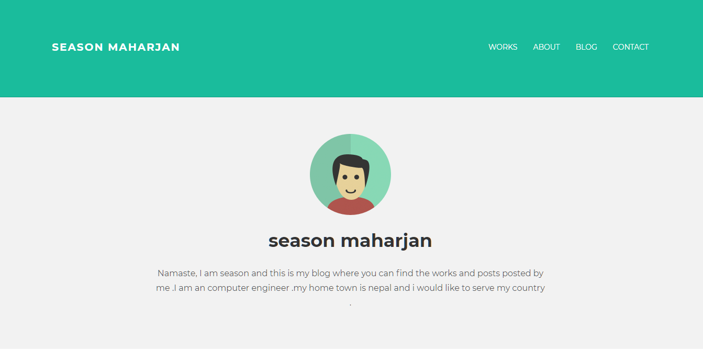
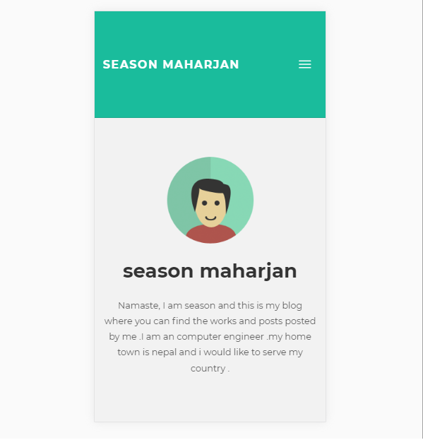
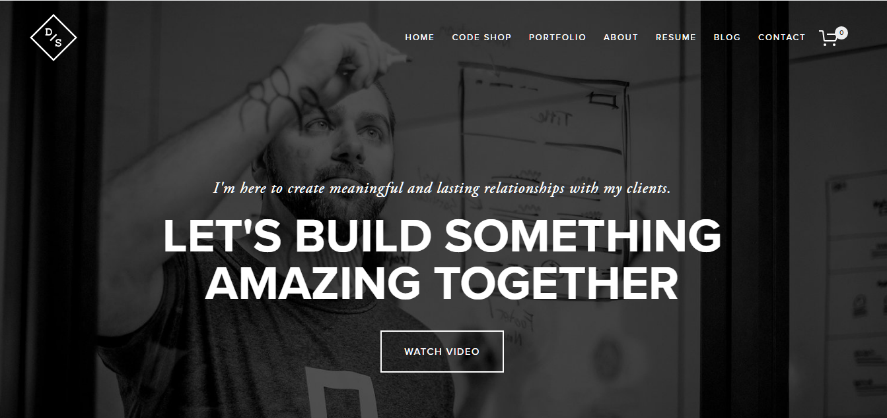
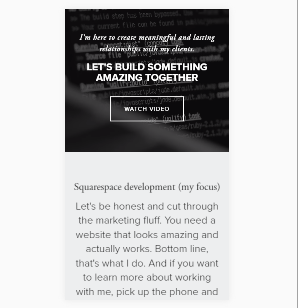
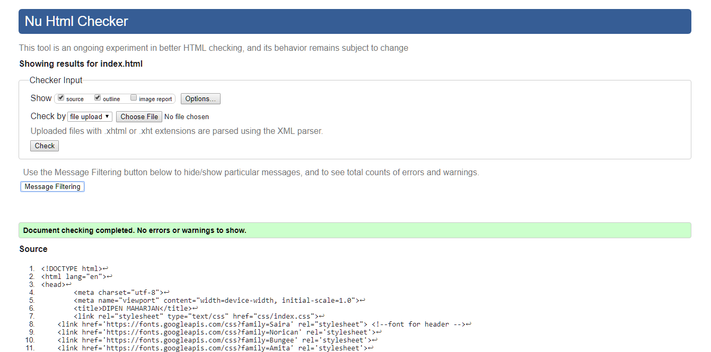
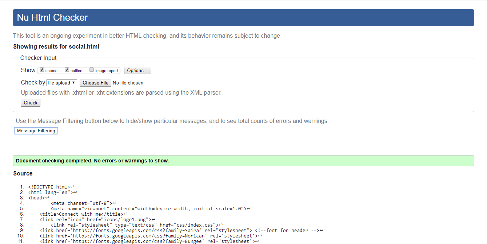
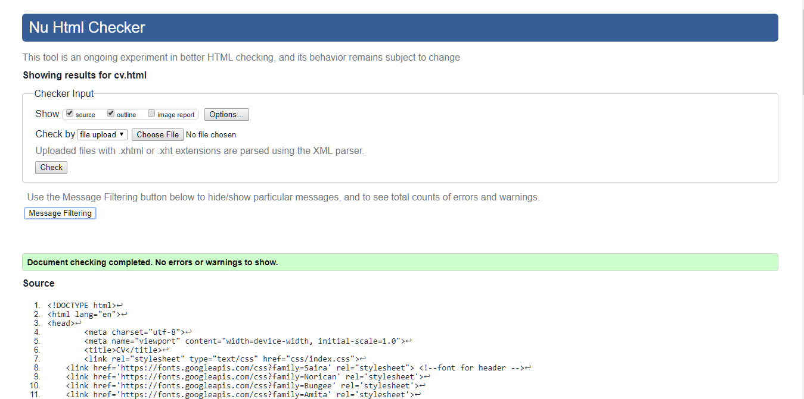
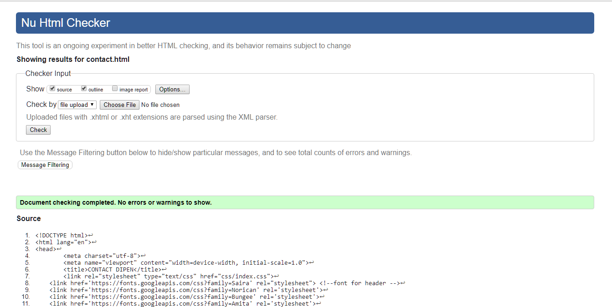
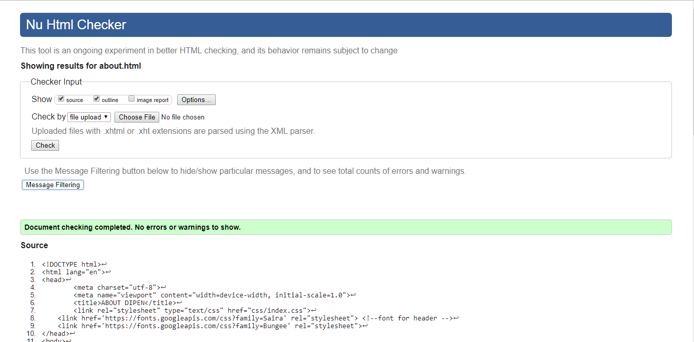

INTRODUCTION
The given assignment of making CV website using HTML and CSS will demonstrate our skills in wed development. All the HTML and CSS codes are validated through W3C Validator It contains six different HTML pages i.e
1. Home Page - Landing page or home page of the website
2. About Page - Contains the a short biography
3. Social Media Page - Contains the social media links
4. CV Page - Contains the Cirriculum Vitae
5. Model_GP - Report of project
6. Contact - Contains Geo Map Location and Contact form
GUI DESIGN DECISION
These websites were quite responsive as well as the design layout was good which helped me to create my personal CV. I tried to add the features like icons, responsive navigation bar, etc in my website and overcome the disadvantages of the websites
These are the following websites that influenced me to create this websites are:
Season Maharjan
http://season.info.np/


Harrisburg Web Design
https://www.devonstank.com/


TESTING
The following are the evidience of my webpages using W3C Validator.
W3C Validation of Home Page

W3C Validation of Social Media Page

W3C Validation of Curriculum Vitae Page

W3C Validation of Contact Page

W3C Validation of About Page

W3C Validation of CSS Page

REFERENCE
W3Schools Online Web Tutorials (1999). W3Schools [online] Available at:
https://www.w3schools.com/ [Accessed on 4 Apr 2018].
Falticon, the largest database database of free vetcor icons (2010). Flaticon [online] Available at:
www.flaticon.com [Accessed on 15 April 2018].